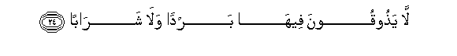

Sacred Texts Islam Index
Hypertext Qur'an Unicode Palmer Pickthall Yusuf Ali English Rodwell
Sūra LXXVIII.: Nabaa, or The (Great) News. Index
Previous Next

The Holy Quran, tr. by Yusuf Ali, [1934], at sacred-texts.com
Sūra LXXVIII.: Nabaa, or The (Great) News.
Section 1
1. Concerning what
Are they disputing?
2. AAani alnnaba-i alAAatheemi
2. Concerning the Great News,
3. Allathee hum feehi mukhtalifoona
3. About which they
Cannot agree.
4. Verily, they shall soon
(Come to) know!
5. Verily, verily they shall
Soon (come to) know!
6. Alam najAAali al-arda mihadan
6. Have We not made
The earth as a wide
Expanse,
7. And the mountains as pegs?
8. And (have We not) created
You in pairs,
9. WajaAAalna nawmakum subatan
9. And made your sleep
For rest,
10. WajaAAalna allayla libasan
10. And made the night
As a covering,
11. WajaAAalna alnnahara maAAashan
11. And made the day
As a means of subsistence?
12. Wabanayna fawqakum sabAAan shidadan
12. And (have We not)
Built over you
The seven firmaments,
13. WajaAAalna sirajan wahhajan
13. And placed (therein)
A Light of Splendour?
14. Waanzalna mina almuAAsirati maan thajjajan
14. And do We not send down
From the clouds water
In abundance,
15. Linukhrija bihi habban wanabatan
15. That We may produce
Therewith corn and vegetables,
16. And gardens of luxurious growth?
17. Inna yawma alfasli kana meeqatan
17. Verily the Day
Of Sorting Out
Is a thing appointed,—
18. Yawma yunfakhu fee alssoori fata/toona afwajan
18. The Day that the Trumpet
Shall be sounded, and ye
Shall come forth in crowds;
19. Wafutihati alssamao fakanat abwaban
19. And the heavens
Shall be opened
As if there were doors,
20. Wasuyyirati aljibalu fakanat saraban
20. And the mountains
Shall vanish, as if
They were a mirage.
21. Inna jahannama kanat mirsadan
21. Truly Hell is
As a place of ambush,—
22. For the transgressors
A place of destination:
23. They will dwell therein
For ages.

24. La yathooqoona feeha bardan wala sharaban
24. Nothing cool shall they taste
Therein, nor any drink,
25. Save a boiling fluid
And a fluid, dark, murky,
Intensely cold,—
26. A fitting recompense
(For them).
27. Innahum kanoo la yarjoona hisaban
27. For that they used not
To fear any account
(For their deeds),
28. Wakaththaboo bi-ayatina kiththaban
28. But they (impudently) treated
Our Signs as false.
29. Wakulla shay-in ahsaynahu kitaban
29. And all things have We
Preserved on record.
30. Fathooqoo falan nazeedakum illa AAathaban
30. "So taste ye (the fruits
Of your deeds);
For no increase
Shall We grant you,
Except in Punishment.